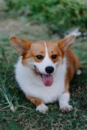

Corgi by Pexels
Introduction
The Welsh Corgi is a small type of herding dog that originated in Wales.
The name corgi is derived from the Welsh words cor and ci (which is mutated to gi), meaning "dwarf" and "dog", respectively.
Two separate breeds are recognized: the Pembroke Welsh Corgi and the Cardigan Welsh Corgi.
Physical differences are seen between the two breeds.
According to the breed standards, overall the Cardigan is larger, both in weight and height.
Their tails are of different shapes, and docking was previously performed on Corgis before the practice was largely banned.